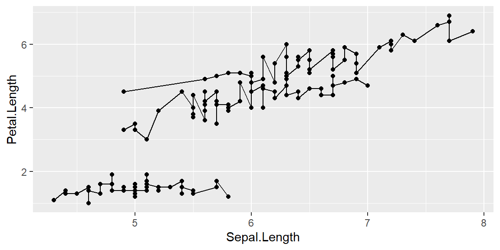
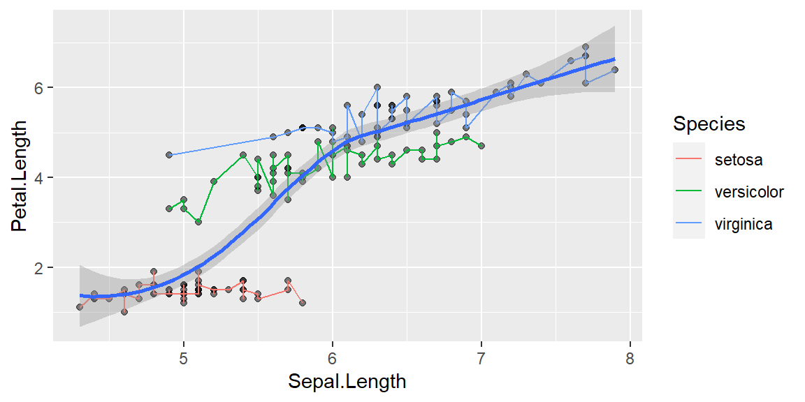
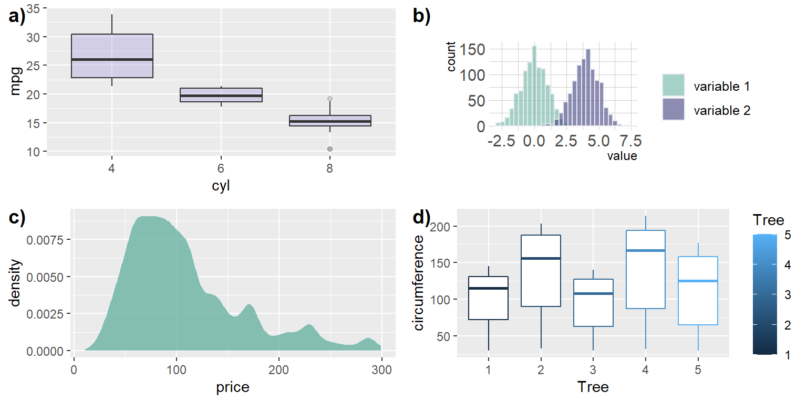

library(ggplot2)Data Visualization
Workshop plan
3 main types of plotting in R:
- base
- lattice
- ggplot2
For this workshop series we are focusing on ggplot2 package for learning how to create publication quality plots.
Installing required packages
install.packages("ggplot2")Loading packages
Installing and loading multiple packages at once
# Create a vector of package names
all.lib<-c("reshape2","ggplot2","gridExtra","ggpubr","ggthemes", "scales","RColorBrewer","tidyverse","hrbrthemes","extrafont","ggtext")
# install packages at once
#install.packages(all.lib)
# Load packages at once
lapply(all.lib,require,character.only=TRUE)Note about apply functions
lapply() function is useful for performing operations on list objects and returns a list object of same length of original set. lappy() returns a list of the similar length as input list object, each element of which is the result of applying FUN to the corresponding element of list. Lapply in R takes list, vector or data frame as input and gives output in list.
sapply() function takes list, vector or data frame as input and gives output in vector or matrix. It is useful for operations on list objects and returns a list object of same length of original set. Sapply function in R does the same job as lapply() function but returns a vector.
# Creating a data frame
# lapply(list, function)
x <- list(a = 1:10, beta = exp(-3:3), logic = c(TRUE,FALSE,FALSE,TRUE))
# compute the list mean for each list element
lapply(x, mean)$a
[1] 5.5
$beta
[1] 4.535125
$logic
[1] 0.5# sapply(list, function)Color palettes in R
R colorbrewer is a good option
library(RColorBrewer)
par(mar=c(3,4,2,2))
display.brewer.all()Creating your own color palette
# COLOR PALETTES
pastel.colpal<-c("#355070", "#6d597a", "#b56576", "#e56b6f", "#eaac8b","#a44200")
sage.colpal<-c("#cb997e", "#ddbea9", "#ffe8d6", "#b7b7a4", "#6b705c","#585123")
tog<-rbind(pastel.colpal,sage.colpal)
#show_col(tog,labels = FALSE)
show_col(tog,cex_label=0.5)Dataset: Working with Inbuild dataset
data() # Exploring different inbuild dataset
data("iris") # attaching inbuild dataset
head(iris) Sepal.Length Sepal.Width Petal.Length Petal.Width Species
1 5.1 3.5 1.4 0.2 setosa
2 4.9 3.0 1.4 0.2 setosa
3 4.7 3.2 1.3 0.2 setosa
4 4.6 3.1 1.5 0.2 setosa
5 5.0 3.6 1.4 0.2 setosa
6 5.4 3.9 1.7 0.4 setosa# Iris data set is a dataset with 150 observation with 5 variables as columns
# Each observation is a row (150)
# Each variable is a column (5): Sepal.Length; Sepal.Width, Petal.Length, Petal.Width and Species
#View(iris) # Viewing dataset
str(iris) # structure of data'data.frame': 150 obs. of 5 variables:
$ Sepal.Length: num 5.1 4.9 4.7 4.6 5 5.4 4.6 5 4.4 4.9 ...
$ Sepal.Width : num 3.5 3 3.2 3.1 3.6 3.9 3.4 3.4 2.9 3.1 ...
$ Petal.Length: num 1.4 1.4 1.3 1.5 1.4 1.7 1.4 1.5 1.4 1.5 ...
$ Petal.Width : num 0.2 0.2 0.2 0.2 0.2 0.4 0.3 0.2 0.2 0.1 ...
$ Species : Factor w/ 3 levels "setosa","versicolor",..: 1 1 1 1 1 1 1 1 1 1 ...dim(iris) # dimensions rows and columns[1] 150 5ggplot2
ggplot2 function works with figures in layers. We are first calling the ggplot function to create a new plot.
Adding a base layer:
ggplot(data = iris, mapping = aes(x = Species , y = Sepal.Length))ggplot tells R, we are working with a new plot. All the parameters and arguments given inside of the ggplot function are global parameters.
Two arguments passed:
- data : what data to work with
- aes function : how variables in the data map to aesthetic properties of the figure, in this case the x and y locations
Adding geom_point function:
ggplot(data = iris, mapping = aes(x = Species , y = Petal.Length))+
geom_point()Changing aes function by adding color:
ggplot(data = iris, mapping = aes(x = Species , y = Petal.Length, color=Species)) +
geom_point()geom_line
Changing the geom parameters from point to line:
ggplot(data = iris, mapping = aes(x = Species , y = Petal.Length, color=Species)) +
geom_line()geom_boxplot
Changing the geom parameters from point to boxplot:
ggplot(data = iris, mapping = aes(x = Species , y = Petal.Length, color=Species)) +
geom_boxplot()Adding more layer
Adding additional layers of points on top of boxplots:
ggplot(data = iris, mapping = aes(x = Species , y = Petal.Length, color=Species)) +
geom_boxplot() +
geom_point()HYPOTHESIS: How is sepal length varying with petal length?
Adding group aesthetics
We are testing for the following hypothesis. Hypothesis: How is sepal length varying with petal length?
ggplot(data = iris, mapping = aes(x = Sepal.Length , y = Petal.Length)) +
geom_point()Adding a line on top of points:
ggplot(data = iris, mapping = aes(x = Sepal.Length , y = Petal.Length)) +
geom_point()+
geom_line()The above graph doesn’t make sense unless you are looking for an overall pattern without breaking it down by species.
Adding grouping
ggplot(data = iris, mapping = aes(x = Sepal.Length , y = Petal.Length, group=Species)) +
geom_point() +
geom_line()
Changing aesthetics within layers
ggplot(data = iris, mapping = aes(x = Sepal.Length , y = Petal.Length, group=Species)) +
geom_point() +
geom_line(aes(color=Species))Changing transparency
ggplot(data = iris, mapping = aes(x = Sepal.Length , y = Petal.Length, group=Species)) +
geom_point(alpha = 0.5) +
geom_line(aes(color=Species))
Adding transformation
geom_smooth: fitting a relationship between data; by default formula is y~x and method is loess
Without grouping
This doesn’t make sense unless you are looking for an overall pattern in the data.
ggplot(data = iris, mapping = aes(x = Sepal.Length , y = Petal.Length)) +
geom_point(alpha = 0.5) +
geom_line(aes(color=Species))+
geom_smooth()`geom_smooth()` using method = 'loess' and formula 'y ~ x'
With grouping
If you are looking for a relationship between sepal length and petal length for each species
ggplot(data = iris, mapping = aes(x = Sepal.Length , y = Petal.Length, group = Species)) +
geom_point(alpha = 0.5) +
geom_line(aes(color=Species))+
geom_smooth()`geom_smooth()` using method = 'loess' and formula 'y ~ x'
Linear relationship
ggplot(data = iris, mapping = aes(x = Sepal.Length , y = Petal.Length, group = Species)) +
geom_point(alpha = 0.5) +
geom_line(aes(color=Species))+
geom_smooth(method = "lm",size=1)`geom_smooth()` using formula 'y ~ x'Multipanel figures
ggplot(data = iris, mapping = aes(x = Sepal.Length , y = Petal.Length)) +
geom_point(alpha = 0.5) +
geom_line(aes(color=Species))+
geom_smooth(method = "lm",size=1)+
facet_wrap(~Species)`geom_smooth()` using formula 'y ~ x'Changing figure aesthetics
Colors
ggplot(data = iris, mapping = aes(x = Species , y = Petal.Length, color=Species)) +
geom_point()+
scale_color_manual(values=pastel.colpal)Understanding colors
Here only line changes color since geom_line has the color aesthetics
ggplot(data = iris, mapping = aes(x = Sepal.Length , y = Petal.Length)) +
geom_point(alpha = 0.5) +
geom_line(aes(color=Species))+
geom_smooth(method = "lm",size=1)+
facet_wrap(~Species)+
scale_color_manual(values=pastel.colpal)`geom_smooth()` using formula 'y ~ x'Let’s specify color as a global aesthetic
ggplot(data = iris, mapping = aes(x = Sepal.Length , y = Petal.Length, color=Species)) +
geom_point(alpha = 0.5) +
geom_line(aes(color=Species))+
geom_smooth(method = "lm",size=0.4,color="black")+
facet_wrap(~Species)+
scale_color_manual(values=pastel.colpal)`geom_smooth()` using formula 'y ~ x'Changing x and y labels
using xlab(), ylab()
ggplot(data = iris, mapping = aes(x = Sepal.Length , y = Petal.Length, color=Species)) +
geom_point(alpha = 0.5) +
geom_line(aes(color=Species))+
geom_smooth(method = "lm",size=0.4,color="black")+
facet_wrap(~Species)+
scale_color_manual(values=pastel.colpal)+
xlab("This is Sepal Length") +
ylab("This s Petal Length") `geom_smooth()` using formula 'y ~ x'Adding themes
ggthemes package has several pre-specified themes
ipsum theme
library(hrbrthemes)
#| label: fig-tweentyfig
#| fig-cap: "Ipsum theme"
#| fig-align: "center"
ggplot(data = iris, mapping = aes(x = Sepal.Length , y = Petal.Length, color=Species)) +
geom_point(alpha = 0.5) +
geom_line()+
geom_smooth(method = "lm",size=0.4,color="black")+
facet_wrap(~Species)+
scale_color_manual(values=pastel.colpal)+
xlab("This is Sepal Length") +
ylab("This s Petal Length") +
theme_ipsum()`geom_smooth()` using formula 'y ~ x'Classic theme
library(ggthemes)
#| label: fig-twentyonefig
#| fig-cap: "Classic theme"
#| fig-align: "center"
ggplot(data = iris, mapping = aes(x = Sepal.Length, y = Petal.Length, color=Species)) +
geom_point(alpha = 0.5) +
geom_line(aes(color=Species))+
geom_smooth(method = "lm",size=0.4,color="black")+
facet_wrap(~Species)+
scale_color_manual(values=pastel.colpal)+
xlab("This is Sepal Length") +
ylab("This s Petal Length") +
theme_classic()`geom_smooth()` using formula 'y ~ x'Adding figure title
Using ggtitle,
ggplot(data = iris, mapping = aes(x = Sepal.Length , y = Petal.Length, color=Species,group=Species)) +
geom_point(alpha = 0.5) +
geom_line(aes(color=Species))+
geom_smooth(method = "lm",size=0.4,color="black")+
#facet_wrap(~Species)+
scale_color_manual(values=pastel.colpal)+
xlab("Sepal Length") +
ylab("Petal Length") +
ggtitle("Relationship between Sepal Length and Petal Length")+
theme_classic()`geom_smooth()` using formula 'y ~ x'Adding more theme elements
fig1<-ggplot(data = iris, mapping = aes(x = Sepal.Length , y = Petal.Length,color=Species,group=Species)) +
geom_point(alpha = 0.5) +
geom_line(aes(color=Species))+
geom_smooth(method = "lm",size=0.4,color="black")+
#facet_wrap(~Species)+
scale_color_manual(values=pastel.colpal)+
xlab("Sepal Length") +
ylab("Petal Length") +
ggtitle("Relationship between Sepal Length and Petal Length")+
theme_ipsum()+
theme(axis.ticks.x=element_blank(),
legend.title = element_text(size=14,face = "bold"),
#legend.text = element_markdown(size=12,face="bold"),
axis.text.x = element_text(size=14,face="bold"),
axis.text.y = element_text(size=14,face="bold"),
axis.title.y = element_text(size=18,face="bold"),
axis.title.x = element_text(size = 18,face="bold"))
fig1`geom_smooth()` using formula 'y ~ x'Saving and publishing plots
figure1<-ggplot(data = iris, mapping = aes(x = Sepal.Length , y = Petal.Length, color=Species,group=Species)) +
geom_point(alpha = 0.5) +
geom_line(aes(color=Species))+
geom_smooth(method = "lm",size=0.4,color="black")+
#facet_wrap(~Species)+
scale_color_manual(values=pastel.colpal)+
xlab("Sepal Length") +
ylab("Petal Length") +
ggtitle("Relationship between Sepal Length and Petal Length")+
theme_ipsum()+
theme(axis.ticks.x=element_blank(),
legend.title = element_text(size=14,face = "bold"),
# legend.text = element_markdown(size=12,face="bold"),
axis.text.x = element_text(size=14,face="bold"),
axis.text.y = element_text(size=14,face="bold"),
axis.title.y = element_text(size=18,face="bold"),
axis.title.x = element_text(size = 18,face="bold"))
figure1`geom_smooth()` using formula 'y ~ x'ggsave(filename="My_publishable_figure.jpeg", plot=figure1, width=10, height=6,dpi=700)`geom_smooth()` using formula 'y ~ x'
Multiple plots together in R
You can add multiple figures together from different data sets as well.
# Renaming the figures
## Geom plot using mtcars data
fig1<-ggplot(mtcars, aes(x=as.factor(cyl), y=mpg)) +
geom_boxplot(fill="slateblue", alpha=0.2) +
xlab("cyl")
## Building a dataset with different distributions
data <- data.frame(
type = c( rep("variable 1", 1000), rep("variable 2", 1000) ),
value = c( rnorm(1000), rnorm(1000, mean=4) ))
fig2<- data %>%
ggplot( aes(x=value, fill=type)) +
geom_histogram( color="#e9ecef", alpha=0.6, position = 'identity') +
scale_fill_manual(values=c("#69b3a2", "#404080")) +
theme_ipsum() +
labs(fill="")
## Loading dataset from github
path<-"https://raw.githubusercontent.com/holtzy/data_to_viz/master/Example_dataset/1_OneNum.csv"
data <- read.table(path, header=TRUE)
# Make the histogram
fig3<- data %>%
filter( price<300 ) %>%
ggplot( aes(x=price)) +
geom_density(fill="#69b3a2", color="#e9ecef", alpha=0.8)
## Loading dataset from your computer
# Note you will have to specify a dataset here from your computer for this to work
data("Orange")
write.csv(Orange,"newlysaved.csv",row.names = FALSE)
data<-read.csv(file = "newlysaved.csv")
fig4<- data %>%
ggplot(aes(x=Tree,y=circumference,color=Tree))+
geom_boxplot(aes(factor(Tree)))
all.fig<-ggarrange(nrow = 2,ncol = 2,
fig1,fig2,fig3,fig4,
labels = c("a)","b)","c)","d)"))`stat_bin()` using `bins = 30`. Pick better value with `binwidth`.all.fig
#ggsave(filename="MultipleFigures.jpeg", plot=all.fig, width=15, height=8,dpi=600)